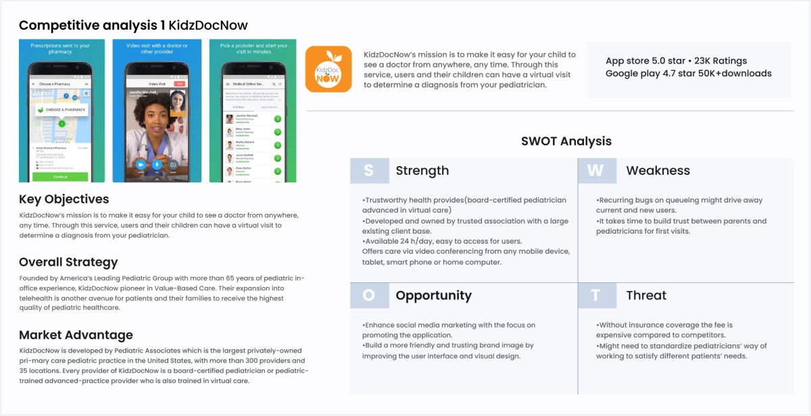
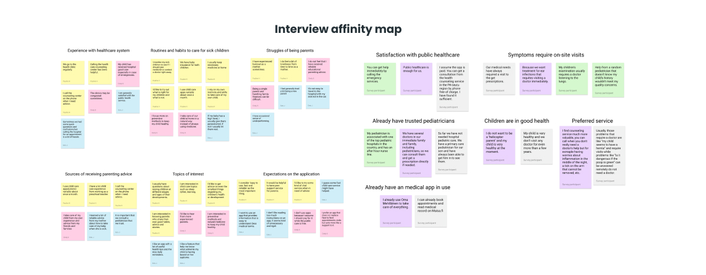
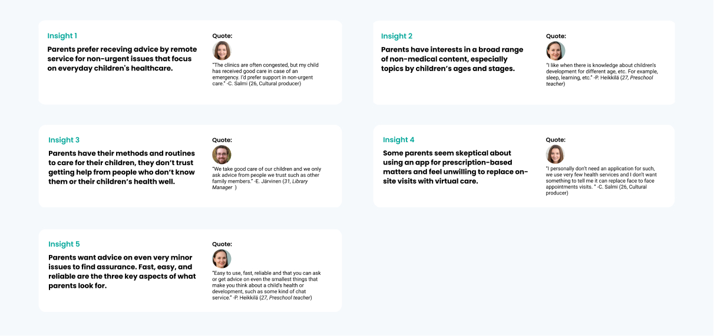
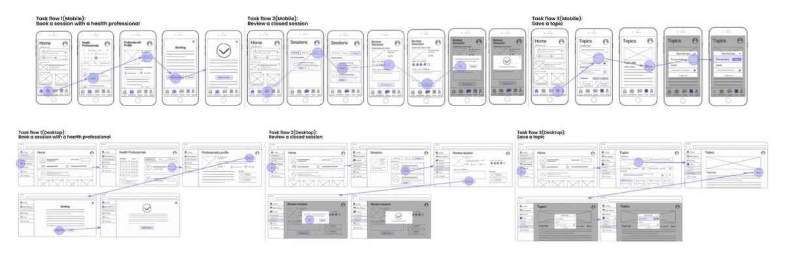

A mobile-first design of consultation service for children’s health
Project overview
KidDoc is a web app that lets parents consult children’s health professionals and find recommended topics on their children’s health and development.
Deliverables: Competitive analysis• User surveys and interviews • User personas• Journey mapping• User flow• Information architecture• Wireframing• Prototyping• Usability testing• UI design
Tools: Figma• Optimal Workshop• Adobe creative suite• UsabilityHub• Zoom• Miro• Google forms• Google sheets
Discovering market opportunities
Competitive analysis
To identify underserved market opportunities and deepen my knowledge in similar products, I conducted competitive analysis focusing on two chosen app, I conducted competitive analysis as shown below.

Gaining insights from parents
User survey and interviews
User surveys-I posted survey in both Finnish and English online for parents to fill in, 49 potential users participated.
User interviews-I conducted 3 semi-structured interviews with parents (of children’s age from 0-9). Then I used affinity map to sort the raw data.


Part of the research result slightly differed from what I have imagined and learned from desk research which helped me readjust, before I focused too much on efficiency (fast speed and instant access), availability and efficient still remain as the top concerns for parents, but after user research I learned it’s way more than that: building trust and seeking reassurance plays a huge part in what parents need as well.
Synthesizing data into user empathy
User persona
To build empathy with potential users, and guide my design decisions and priorities through the design process, I transformed the data into user persona based on the results of the survey and interviews.
User journey map
To visualize the steps taken by the users as they engage with the product, I created a user journey map. This visualizes user's motivations and helps me spot any pain points in each step of the journey.
Uncover users' mental models for better IA
Information architecture
I structured a site map based on research findings. To refine my sitemap, I conducted an online open card sort using OptimalSort.
Ideating and visualizing the solutions
Sketching and wireframing
With a refined site map, I drew sketches of each screen for 3 core features and started the iterative process of ‘build, measure, learn’ over and over following the MVP method. I did rapid brainstorming on paper before going into the more time-consuming digital implementation.

Evaluating usability with testing
Usability tests
To assess the learnability and possible confusion and errors for new users interacting with the web app prototype for the first time on mobile. I conducted 7 remote moderated usability tests. During the tests, I observed and measured if users can understand the project, its value, and how they completed the 3 tasks.
Reaching the final outcome
Refined final screen
There are 49 final screens in total, take a look at the key final screens of the three core features and flows of the web app.
Designing a responsive web app from beginning to end has been a rewarding journey. One of the reasons why I chose to work on this project is to challenge myself as a growing UX designer, it’s been a great learning opportunity getting to know about healthcare digital experience as a non-parent.It's just the beginning of my life as an Experience Designer and I still have a long way to go. I'm ready to set out for the next journey!